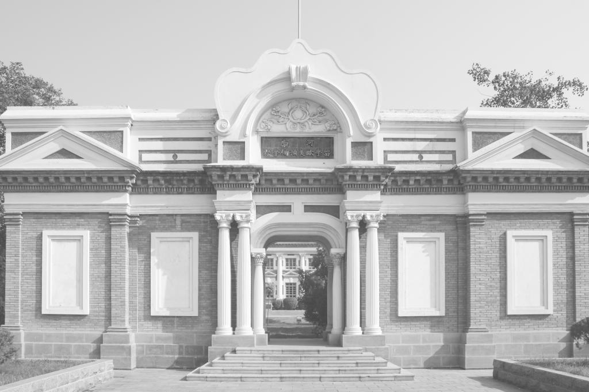
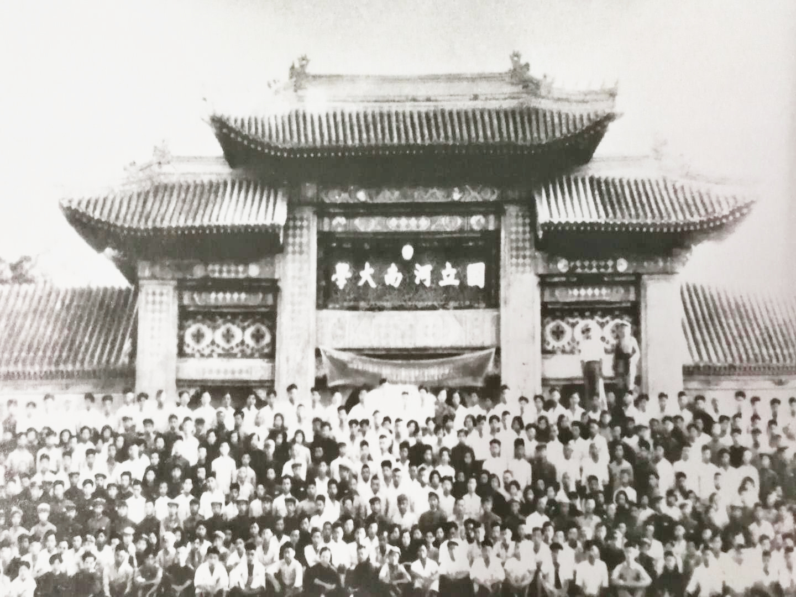
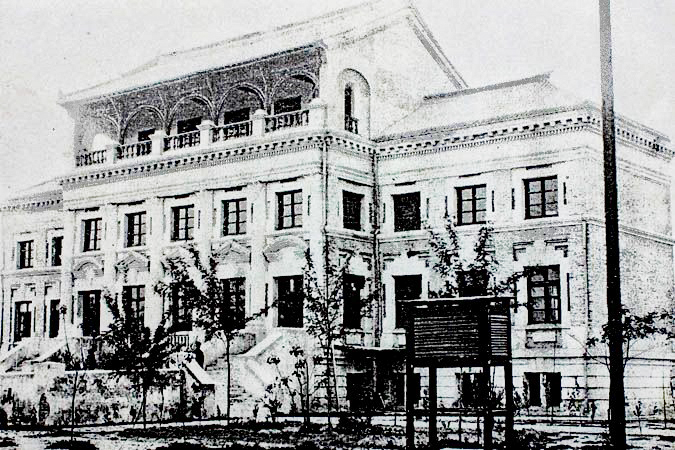

“同舟共进•我与河南大学的故事”征文
发布时间：2020-09-12 10:09:13 作者：党委统战部
20世纪初的欧风美雨和辛亥革命的胜利曙光，孕育催生了河南大学。1912年，在河南贡院的旧址上，河南大学留学欧美预备学校成立，是当时中国的三大留学培训基地之一。距今，河南大学已经走过了一个多世纪的风雨历程。一百多年来，历代河大人夙兴夜寐，创造了彪炳校史的辉煌业绩；今日河大人接续奋斗，谱写了激励来者的时代壮歌。
20世纪初，学校便开统战之风气，广大统一战线成员遵循河大校训，传承河大精神，风雨同舟、肝胆相照，共同为河南大学的建设发展贡献了智慧与力量。其历史值得铭记，其情怀值得抒写。
2022年9月25日,是河南大学建校110周年纪念日，为献礼校庆，同时亦为记录我校统战成员献身教育，培养人才的故事，传承筚路蓝缕、发奋图强的河大精神，党委统战部特举办“同舟共进•我与河南大学的故事——河南大学统一战线庆祝建校110周年征文”活动。
一、征文对象
1.各民主党派、统战团体成员和无党派人士（海内外广大校友）；
2.统战工作人员。
二、征文主题
围绕“同舟共进•我与河南大学的故事” 这一主题，生动讲述学校各民主党派统战团体成员、无党派人士（海内外广大校友）在学校学习、工作和生活或参与学校统战活动的故事；客观记述历史上或现阶段与学校统战工作相关的事件、活动，或工作随笔、感悟体会等。
三、征文时间
即日起至2021年 12月31日
四、征文要求
1. 文章内容应事实准确，逻辑严谨，情感真挚，积极向上。
2. 体裁不限，篇幅以1000—3000字为宜。诗歌不限字数。
3．欢迎提供相关图片，注明拍摄内容、拍摄时间、拍摄者姓名等，图片以电子版为佳（图片为jpg格式，3MB以上）。
4. 投稿人应保证所投作品的原创性，拥有独立、完整、无异义的著作权。投稿作品涉及侵权行为导致纠纷的，由投稿人承担相关责任。
5. 投稿人对作品拥有署名权，在双方一致同意的情况下，主办单位可对作品适当修改并拥有使用权，凡投稿者均视作同意上述规则。
6．投稿请发至邮箱：tbz20182019@163.com，邮件主题注明“我与河南大学征文”。来稿请附不超过200字的个人简介，包括姓名、联系方式、所在单位等信息。
五、征文评审及用途
1.征文结束，主办方组织专家评选出若干优秀作品，颁发证书并给予适当奖励。
2.来稿经审核编辑后，择优在河南大学网、党委统战部新闻网、微信公众号、《河南大学报》等平台发布，优秀文章将结集出版。
3.河南大学党委统战部对本次征文的相关事项及未尽细节拥有最终解释权。
六、联系方式
来函地址：河南省开封市金明大道河南大学金明校区 河南大学党委统战部（请注明征文），邮编：475004。
联系人：于老师、李老师 联系电话：0371-22922286
衷心感谢广大统战成员对河南大学统一战线工作的关注与支持！我们期待您写出自己与河南大学的故事，讲出自己的河大情感。因为，河南大学是我们共同的精神家园。
河南大学党委统战部
2020年9月12日